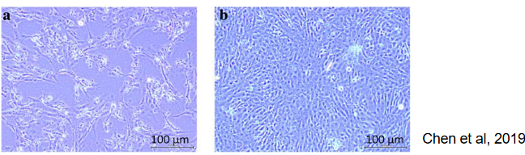
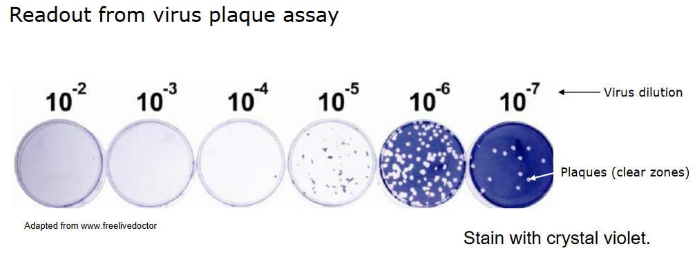
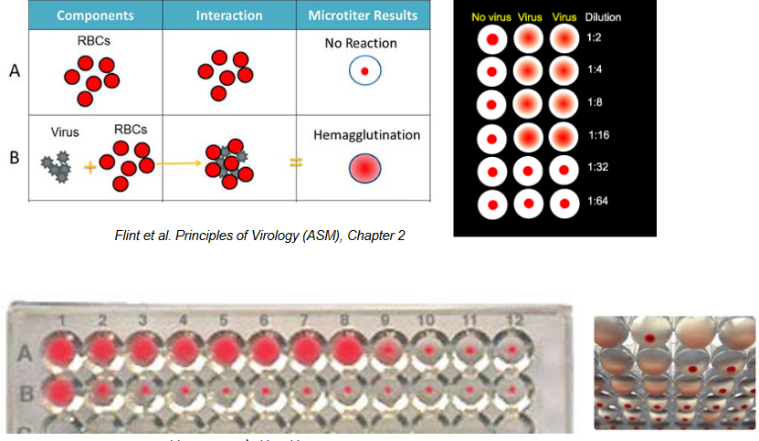
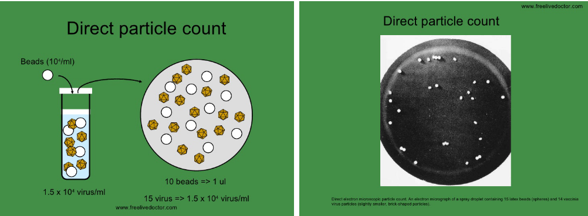

4 Growing and Counting Viruses
Viruses, tiny infectious agents, don’t have their own energy production, so they rely on the inner workings of host cells to function. This close connection means they interact closely with the cells they infect. To grow and study viruses, scientists use cells in which viruses can multiply. Additionally, determining the amount of virus in a given sample is important for understanding infections.
4.1 Cultivating Viruses
Three people - John Enders, Thomas Weller, and Frederick Robbins - were able to grow poliovirus particles in human cells.
When it comes to growing viruses, scientists use different types of cell systems:
Primary Cells
These are directly taken from tissues and not repeatedly grown in culture. These cells, like chick embryo fibroblasts (CEF), closely resemble the original tissue, but their preparation can be complex and requires tissue access.
Cell Lines
These are cells that have been made immortal through processes like transformation, as seen in Vero cells and MDCK cells. While they are easy to maintain, they might lose some characteristics of the original tissue.
Animal Tissues or Structures
This may involve tissues or structures from animals, such as using suckling mouse brain for flaviviruses or embryonated eggs for influenza.
The choice of cell system depends on the virus being studied; for example, MDCK cells are preferred for growing influenza viruses.
To gather viruses from an infected host, scientists can collect substances like excretions, secretions, blood, or tissue, and then use these materials to infect cell cultures. The virus obtained from this process is known as a virus isolate.
Sometimes, viruses change to grow better in specific cell lines, leading to genetic modifications associated with adapting to cell cultures. This can be problematic for researchers wanting to study the virus in its natural form (undesirable), but it’s also useful for developing weakened virus vaccines (desirable) since it forms the foundation for making attenuated viral vaccines.
4.1.1 Cytopathic Effect
When viruses infect cultured cells, they can cause different visual changes in the cells’ appearance. These changes are collectively called cytopathic effect or “CPE”. The specific type of CPE can vary depending on the virus and the type of cell it infects.
4.1.2 Particle / PFU Ratio
The particle or pfu ratio is a comparison between the total number of virus particles and the number of infectious particles, usually measured in plaque forming units (i.e., pfu). In an ideal scenario, this ratio would be 1.0, indicating that all particles are infectious.
However, in real-world situations, this ratio is typically greater than 1.0. For instance, with influenza, this ratio can be around 10, suggesting that not all virus particles are capable of causing infection.
4.1.3 Multiplicity of Infection (i.e., MOI)
The Multiplicity of Infection (i.e., moi) measures the average amount of infectious virus introduced to each cell. For instance, an moi of 1 means adding 1 pfu per cell. It’s important to determine this for a specific virus stock preparation.
To create a virus stock, a low moi is used, usually ranging from 0.01 to 0.1. This helps prevent the creation of defective interfering particles, which would increase the particle/pfu ratio.
On the other hand, studies focusing on virus replication use a higher moi, typically between 5 and 10, ensuring that all cells are infected simultaneously. To calculate moi accurately, it’s necessary to know both the cell count and the number of infectious particles being added.
4.2 Quantifying Viruses
There are two main types of assays used to study viruses:
Infectivity assays
These tests are designed to measure the presence of infectious virus particles. They determine whether the virus is capable of infecting and replicating within host cells.
Non-infectivity assays
These assays are used to measure the quantity of virus present in a sample, regardless of whether the virus is still capable of causing infection. They provide information about the overall amount of viral material in the sample.
4.2.1 Virus Infectivity Assays
4.2.1.1 Plaque Assay

The plaque assay is a technique that exploits the fact that a single infectious virus particle can cause a visible area of damage, like cell death. Here’s how it works:
Scientists create serial dilutions of a virus suspension and apply these dilutions to a layer of cells. The cells are then incubated for a specific period, which varies depending on the virus.
An overlay is added to the cell layer to restrict the spread of the virus, allowing local virus replication to occur.
After some time, the cells are stained so that the areas of damage, called plaques, become visible to the naked eye.
Each plaque originates from a single infectious virus particle. This helps researchers count the number of infectious particles in the initial virus suspension.
Different types of cells are used for different viruses. For example, MDCK cells are used for influenza, and HEp2 cells are used for RSV. This is because different viruses interact better with specific cell types.
In essence, the plaque assay is a method for quantifying the number of infectious virus particles in a sample and allows researchers to study their effects on cells.
The plaque assay method can be adapted in various ways to suit specific needs:
Different overlay medium
Instead of using the standard overlay, various substances like agarose, carboxymethyl cellulose (cmc), or avecel can be used. These substances modify how the virus spreads and affects cells.
Different visualization methods for plaques
Plaques, the visible areas of cell damage, can be detected in diverse ways. This could involve visual observation (noting cell death) or using immunostaining techniques to identify specific viral proteins or markers associated with infected cells. These variations allow researchers to tailor the assay to their objectives and the characteristics of the virus being studied.
4.2.1.2 Endpoint Assay
The endpoint assay is employed when certain viruses don’t create plaques or foci but instead lead to noticeable cytopathic effects (CPE), such as the measles virus on Vero cells.
Here’s how the endpoint assay works:
Replicates and TCID50
Multiple repetitions of the assay are conducted using different virus dilutions. The dilution at which 50% of these replicates show CPE is determined. This provides a value known as the TCID50 (50% Tissue Culture Infectious Dose).
Reed and Muench calculation
To calculate TCID50, the Reed and Muench method is commonly employed. This involves statistical calculations to estimate the viral concentration based on the observed outcomes in the replicates.
The endpoint assay is an alternate method for quantifying viral infectivity when plaque formation isn’t applicable. It helps researchers gauge the virus’s impact on cell cultures.
4.2.2 Other Assays
4.2.2.1 Haemagglutination Assay

Back in 1941, George Hirst made a significant breakthrough by showing that the influenza virus could clump together red blood cells.
This discovery introduced the first quick and quantitative technique for measuring viruses that affect eukaryotic cells. For the first time, it became possible to actually count viruses. This method, which measures the level of influenza virus, is still in use today.
4.2.2.2 Direct Particle Count

The direct particle count method involves estimating the quantity of virus particles using electron microscopy. Here’s how it works:
Using visible markers
Scientists incorporate a known concentration of easily visible markers, like latex beads, into the virus sample.
Electron microscopy
The sample is then examined under an electron microscope, allowing researchers to observe and count both the virus particles and the added markers.
However, it’s important to note that this method doesn’t differentiate between infectious and noninfectious virus particles. While it provides a measure of the total number of particles, it doesn’t offer insights into their infectivity.